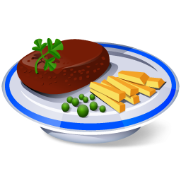

<ion-content>
  <!-- <div *ngIf="!menus.length">
    <ion-text color="primary">
      <h3>Restaurant's menu is empty.</h3>
    </ion-text>
  </div> -->
  <div *ngIf="menus.length">
    <!-- First Level -->
    <ion-list justify-content-center *ngFor="let menu of menus">
      <ion-item>
        <ion-button slot="start" fill="clear" (click)="toggleMenu(menu)">
          <ion-icon name="arrow-dropdown-circle" *ngIf="menu !== currentMenu"></ion-icon>
          <ion-icon name="arrow-dropup-circle" *ngIf="menu === currentMenu"></ion-icon>
        </ion-button>
        <ion-label>{{menu.nameSlug | uppercase}}</ion-label>
      </ion-item>

      <!--Second Level-->
      <div *ngIf="menu === currentMenu">
        <ion-list *ngFor="let food of menu.foodItems">
          <ion-item>
            <ion-button slot="start" fill="clear" (click)="toggleFood(food)">
              <ion-icon name="add-circle" *ngIf="food !== currentFood"></ion-icon>
              <ion-icon name="close-circle" *ngIf="food === currentFood"></ion-icon>
            </ion-button>
            
            <ion-label>{{food.nameSlug | uppercase}}: {{food.price}} ZŁ</ion-label>
            <ion-button slot="end" fill="clear" (click)="addProductToBucket(food)">
              <ion-icon name="basket"></ion-icon>
            </ion-button>
          </ion-item>

          <!--Third Level-->
          <div *ngIf="menu === currentMenu && food === currentFood">
            <ion-list>
              <ion-item *ngIf="food.foodDescription != null" text-wrap text-center>
                <ion-text color="dark">
                  {{food.foodDescription}}
                </ion-text>
              </ion-item>
              <ion-item *ngIf="food.calories >= 0">
                <ion-label>Calories:</ion-label>
                <p slot="end">{{food.calories}} kcal</p>
              </ion-item>
              <ion-item *ngIf="food.isSpicy != null">
                <ion-label>Spicy:</ion-label>
                <ion-checkbox slot="end" [disabled]="true" [(ngModel)]="food.isSpicy"></ion-checkbox>
              </ion-item>
              <ion-item *ngIf="food.isVege != null">
                <ion-label>Vege:</ion-label>
                <ion-checkbox slot="end" [disabled]="true" [(ngModel)]="food.isVege"></ion-checkbox>
              </ion-item>
              <ion-item *ngIf="food.isGlutenFree != null">
                <ion-label>Gluten Free:</ion-label>
                <ion-checkbox slot="end" [disabled]="true" [(ngModel)]="food.isGlutenFree"></ion-checkbox>
              </ion-item>
            </ion-list>
          </div>
        </ion-list>
      </div>
    </ion-list>
  </div>
  <ion-fab style="margin-top: -20px" vertical="bottom" horizontal="end" slot="fixed" (click)="showBucket()">
    <ion-fab-button color="{{this.bucketService.foods.length ? 'primary' : 'light'}}">
      <ion-icon md="md-basket"></ion-icon>
    </ion-fab-button>
  </ion-fab>
</ion-content>
